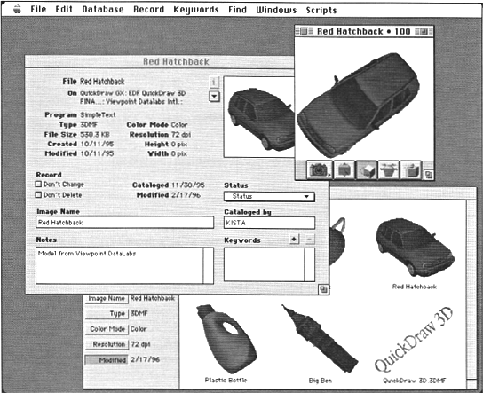
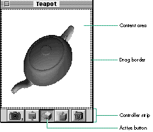
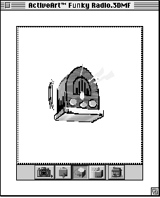
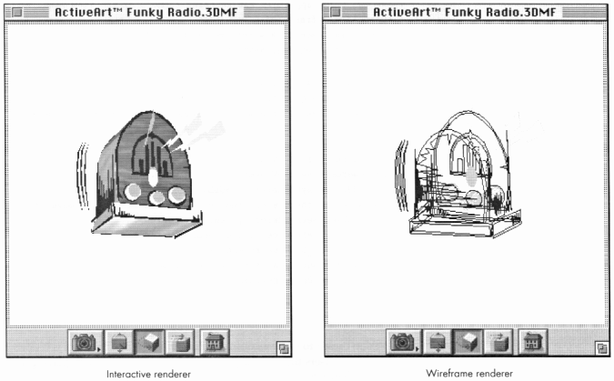
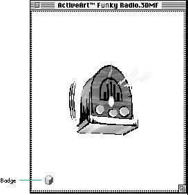

Ever since QuickDraw 3D shipped in 1995, the QuickDraw 3D
Viewer has made adding 3D support to your application easy. With
QuickDraw 3D version 1.5 we've enhanced the Viewer to make it
even easier to use. We've improved the user interface, added
support for Undo, and rolled in some new API calls. Here you'll
learn how to implement the Viewer to provide simple yet powerful
3D capabilities in your products.
The QuickDraw 3D Viewer provides a way for you to add 3D support to your
application without having to come to grips with the complexity of the whole
QuickDraw 3D programming API. As described in "QuickDraw 3D: A New Dimension
for Macintosh Graphics" in develop Issue 22, full use of QuickDraw 3D requires you to
understand many things before you can get started; for example, you need to be able to
set up data structures to hold not only the geometries being modeled but also the other
elements of a scene, including the lighting, the camera, and the draw context. But
sometimes you just want to be able to display some 3D data in your application without
having to write five pages of setup code.
If this situation sounds familiar to you, the Viewer is tailor-made for your
application. You'll learn all you need to know to be able to use it from reading this
article and examining the accompanying sample applications. Still, you might want to
read the article in Issue 22 as background and to get a sense of how you can use the
Viewer in conjunction with the QuickDraw 3D shared library.
The QuickDraw 3D Viewer is a high-level shared library, available in both Macintosh
and Windows versions, that's separate from the QuickDraw 3D shared library. With
fewer calls than the full QuickDraw 3D API, the Viewer is a great place to start
exploring QuickDraw 3D. By implementing the Viewer, you can enable users to view
and have a basic level of interaction with 3D data in your application without having to
call any QuickDraw 3D functions. When you need more power, you can always mix
QuickDraw 3D calls with Viewer calls.
The Viewer is ideal for applications that might be described as traditional 2D
applications, such as image database and page layout applications. For example, the
image database Cumulus (from the German developer Canto Software GMbH) is a
traditional 2D application that implements the Viewer to enable users to manipulate
objects in 3D (see Figure 1).

Figure 1. An example of Viewer use in the Cumulus image database
The Viewer gives your application considerable functionality for free. For example,
the Macintosh version of the Viewer supports drag and drop of 3D data. And the Viewer
allows access to the view object (described in detail in the article in develop Issue 22)
so that you can add to your application the capability of changing the lighting, the
camera angles and position, and other things such as the type of renderer being used.
Implementing the Viewer in your application is simple. After going over a few
preliminaries, we'll look in detail at two sample applications -- one just a
bare-bones framework for using the Viewer, and the second a more elaborate
application that implements a fuller set of Viewer features. The source code for both
programs accompanies this article on this issue's CD and develop's Web site.
Before you can use the Viewer, you need to make sure that it's installed. There are two
ways to do this on the Macintosh: you can use Gestalt on System 7 or you can weak-link
against the library and check to see if one of the Viewer routines has been declared
when you launch your application.
You need to call Gestalt with the constant gestaltQD3DViewer, as shown in Listing 1.
The routine IsQD3DViewerInstalled returns a Boolean indicating whether the Viewer
has been installed correctly. The bit selector gestaltQD3DViewerAvailable can be used
to test the appropriate bit of the response from Gestalt.
______________________________
Listing 1. Checking for the Viewer with Gestalt
Boolean IsQD3DViewerInstalled()
{
OSErr theErr;
long gesResponse;
if (Gestalt(gestaltQD3DViewer, &gesResponse) != noErr)
return false;
else
return (gesResponse == gestaltQD3DViewerAvailable);
}
______________________________
The other method is to weak-link against the Viewer library and check the value of one
of the Viewer routines against the constant kUnresolvedCFragSymbolAddress (defined
in CodeFragments.h):
if ((long)Q3ViewerNew != kUnresolvedCFragSymbolAddress) {
... /* Call Viewer routines. */
}
For more information on weak linking (also called soft importing), consult the
documentation that came with your development system. If you use this method, you'll
also need to include the file CodeFragments.h.
Version 1.5 of the Viewer introduces several new API features not found in previous
versions of the Viewer. If you want your application to be compatible with previous
versions of the Viewer, you need to check the version by calling the new routine
Q3ViewerGetVersion. Of course, before you can call this routine, you'll need to test
whether it's been loaded along with the Viewer shared library by checking its address
against the symbol kUnresolvedCFragSymbolAddress. If it hasn't been loaded, you can
safely assume that the Viewer version is 1.0.
Alternatively, you can check the address of each function you need to use against
kUnresolvedCFragSymbolAddress. Listing 2 shows a routine to determine the Viewer
version; this routine works with all versions of the Viewer library.
______________________________
Listing 2. Checking the Viewer version number
OSErr GetViewerVersion(unsigned long *major, unsigned long *minor)
{
/* Version 1.0 of the QuickDraw 3D Viewer had no get version
call, so see if the symbol for the API routine descriptor
is loaded. */
if ((Boolean)Q3ViewerGetVersion ==
kUnresolvedCFragSymbolAddress) {
*major = 1;
*minor = 0;
return noErr;
}
else
return Q3ViewerGetVersion(major, minor);
}
______________________________
Now let's take a look at one of the simplest possible applications we might write to
enable someone to open and view QuickDraw 3D metafiles (files containing 3DMF
data). Of course, this isn't a real Macintosh program -- it opens only one document, it
doesn't respond to Apple events, it doesn't present a menu bar, and the user can't save
changes made in the window. But it does demonstrate that with just five calls to the
Viewer library you can provide good support for 3DMF data in your application. We're
not going to cover anything but the QuickDraw 3D part of this application in any detail,
but the source code is commented well enough so that it should be clear how it works.
THE WINDOW
Figure 2 shows the window from our simple application, called BareBones3DApp. An
instance of the Viewer -- a viewer object -- can occupy an entire window or it can
occupy some smaller portion of a window. In the case of BareBones3DApp, the viewer
object entirely fills the window. The viewer object consists of a controller strip and a
content area outlined with a drag border.

Figure 2. Window from BareBones3DApp
The part of the window that contains the content area and the controller strip (if
present) is the viewer pane. As an alternative to having the viewer pane entirely fill
the window, you can place the viewer pane in just part of the window, as shown in
Figure 3. This is useful for embedding a 3D picture in a document window.

Figure 3. The viewer pane as part of a window
In the controller strip, the active button is drawn to look as if it's been pressed. The
buttons shown in Figures 2 and 3 are the default ones; you can hide those you don't
want, or make visible the one additional button that's hidden by default, by setting
flags that will be discussed shortly. You can also hide or show the entire controller
strip; you'll see how to do this later.
The full set of available controller buttons is shown in Figure 4. Let's look at each in
turn.
The camera viewpoint button (called the camera angle button in earlier
documentation) enables the user to view the displayed object from a different camera
angle. Holding down the button causes a pop-up menu to appear, listing the predefined
direction cameras as well as any perspective (view angle aspect) cameras stored in
the view hints of the 3DMF data. If any such cameras have name attributes associated
with them in the data, the names are displayed in the pop-up menu; otherwise, the
cameras are listed as "Camera #1," and so on. (The predefined direction cameras are
calculated based on the front and top custom attributes if present in the 3DMF view
hints; otherwise, they're calculated from the displayed object's coordinate space.)
The distance button lets the user move the displayed object closer or farther away.
Clicking the distance button and then dragging downward in the content area moves the
object closer. Dragging upward in the content area moves the object farther away. The
Down Arrow and Up Arrow keys also move the object closer or farther away,
respectively.
The rotate button enables rotating an object. Clicking this button and then dragging in
the content area rotates the displayed object in the direction of the drag. The arrow
keys rotate the object in the direction of the arrow. With version 1.5 of the Viewer
library, you can use the Shift key to constrain the motion of the object as you rotate it.
The zoom button enables the user to alter the field of view of the current camera,
thereby zooming in or out on the displayed object. After the zoom button is clicked,
pressing the Up Arrow and Down Arrow keys zooms the object out and in. By default,
this button isn't displayed.
The move button lets the user move an object. Clicking this button and then dragging in
the content area moves the object to a new location. The arrow keys move the object in
the direction of the arrow.
The reset button resets the camera angle and position to their initial settings.
Figure 4. The full set of available controller buttons
THE BASIC CALLS
As mentioned earlier, you can add support for 3DMF data with calls to just five
routines in the Viewer shared library. These routines, described below, are the ones
we use in BareBones3DApp. For more details on these calls, see the book 3D Graphics
Programming With QuickDraw 3D.
THE MAIN ROUTINE
The main routine of BareBones3DApp handles initialization of Macintosh managers,
grows the heap to its maximum size, and checks to see if the QuickDraw 3D Viewer is
installed. There must be at least 24K free in the application heap before a call to
Q3ViewerNew can succeed, so it's important to call the Toolbox routine MaxApplZone to
grow the application heap to its maximum size at the start of the program. Otherwise,
the Viewer may detect (in error) that there's not enough memory to run.
The program then calls the Toolbox routine StandardGetFile to locate a 3DMF file to
open and read. The selected file is opened, and a window is created. The routine to
create a viewer object looks like this:
TQ3ViewerObject Q3ViewerNew(CGrafPtr port, Rect *rect,
unsigned long flags);
Notice that you need to pass in port, rectangle, and flags parameters. It's possible to
create an "empty" viewer object by passing in nil for the port parameter; you can then
assign a port later with Q3ViewerSetPort. The flags parameter is used to set flags that
control various aspects of the behavior of the viewer object you create; these flags,
along with the behavior that results when they're set, are listed in Table 1. The flags
of an already created viewer object can be changed with the Q3ViewerSetFlags routine.
______________________________
Table 1. Flags that control aspects of the viewer object
| Flag | default | Result when set |
| kQ3ViewerActive | On | The viewer object is active (can be |
| manipulated). | ||
| kQ3ViewerShowBadge | Off | A badge is displayed in the viewer pane. |
| This flag should be cleared when | ||
| kQ3ViewerControllerVisible is set. | ||
| kQ3ViewerControllerVisible | On | The controller strip is visible. This flag |
| should be cleared when | ||
| kQ3ViewerShowBadge is set. | ||
| kQ3ViewerDrawFrame | Off | A one-pixel frame is drawn within the |
| viewer pane. | ||
| kQ3ViewerDraggingOff | Off | Dragging into and out of the viewer |
| content area is disabled. | ||
| kQ3ViewerDraggingInOff | Off | Dragging into the viewer content area is |
| disabled. | ||
| kQ3ViewerDraggingOutOff | Off | Dragging out of the viewer content area |
| is disabled. | ||
| kQ3ViewerButtonCamera | On | The camera viewpoint button in the |
| controller strip is visible. | ||
| kQ3ViewerButtonTruck | On | The distance button in the controller |
| strip is visible. | ||
| kQ3ViewerButtonOrbit | On | The rotate button in the controller strip |
| is visible. | ||
| kQ3ViewerButtonZoom | Off | The zoom button in the controller strip |
| is visible. | ||
| kQ3ViewerButtonDolly | On | The move button in the controller strip |
| is visible. | ||
| kQ3ViewerButtonReset | On | The reset button in the controller strip |
| is visible. | ||
| kQ3ViewerOutputTextMode | Off | Q3ViewerWriteFile and |
| Q3ViewerWriteData write out 3DMF data | ||
| in text mode. | ||
| kQ3ViewerDragMode | Off | The viewer object responds only to drag |
| and drop interaction, and can't be | ||
| manipulated in any other way. A | ||
| mouse-down in the content area will | ||
| initiate a drag operation. | ||
| kQ3ViewerDrawGrowBox | Off | The viewer object displays a size box in |
| the lower-right corner. | ||
| kQ3ViewerDrawDragBorder | On | The viewer object displays a drag border |
| around the perimeter of the content area. | ||
| kQ3ViewerDefault | Returns the viewer object to the default | |
| configuration. |
______________________________
The flags kQ3ViewerButtonTruck, kQ3ViewerButtonOrbit, kQ3ViewerButtonZoom, and
kQ3ViewerButtonDolly can also be used with the Q3ViewerSetCurrentButton routine.
Passing one of these flags to this routine sets the viewer object to the mode indicated
by the button. If the button is visible in the controller strip, it's drawn to look as if
it's been pressed, and the previously selected button is deselected.
You can override the default drag-handling behavior by attaching your own drag
handler to the document window. You'll want to do this if your application supports
multiple viewer objects per window or if you're creating something where the default
may get in the way of your programming model -- for example, an OpenDoc part or a
HyperCard XCMD.
Listing 3 shows how we implement the main routine in C. Note that we place a
reference to the viewer object in the window's refCon field so that later in the
program we can easily get the viewer object associated with the window.
______________________________
Listing 3. The main routine from BareBones3DApp
void main(void)
{
short myNumTypes = 1, myRefNum;
SFTypeList myTypeList = { '3DMF' };
StandardFileReply mySFReply;
OSErr theErr = noErr;
WindowPtr myWind = nil;
Rect myRect = { 0, 0, kWindHeight, kWindWidth };
TQ3ViewerObject myViewer;
/* Initialize all the needed managers. */
InitGraf((Ptr)&qd.thePort); InitFonts(); InitWindows();
InitMenus(); TEInit(); InitDialogs((long)nil);
InitCursor();
/* Expand the heap to maximum size. */
MaxApplZone();
/* We weak-linked against the Viewer. Now check that it's
installed. */
if ((long)Q3ViewerNew != kUnresolvedCFragSymbolAddress) {
StandardGetFile(nil, myNumTypes, myTypeList, &mySFReply);
if (mySFReply.sfGood) {
theErr = FSpOpenDF(&mySFReply.sfFile, fsRdPerm, &myRefNum);
OffsetRect(&myRect, 50, 50);
myWind = NewCWindow(nil, &myRect, "\pViewerApp", true,
documentProc, (WindowPtr)-1, true, 0L);
if (myViewer = Q3ViewerNew((CGrafPtr)myWind,
&myWind->portRect,
kQ3ViewerDefault)) {
/* If the viewer object isn't nil, we created it OK. */
theErr = Q3ViewerUseFile(myViewer, myRefNum);
SetWRefCon(myWind, (long)myViewer);
MainEventLoop();
}
}
}
ExitToShell();
}
______________________________
THE MAIN EVENT LOOP
The main event loop, shown in Listing 4, handles events until the window is closed.
There are only two types of event that we'll consider handling in this program: update
and mouse-down events. In response to an update event we'll need to call
Q3ViewerDraw. Handling mouse-down events is somewhat more complex, since we'll
need to determine where the mouse-down occurred.
______________________________
Listing 4. The main event loop from BareBones3DApp
void MainEventLoop(void)
{
WindowPtr myWind;
Boolean gotEvent;
TQ3ViewerObject theViewer;
OSErr theErr;
RgnHandle tempRgn;
Rect dragRect;
EventRecord theEvent;
GrafPtr savedPort;
while ((myWind = FrontWindow()) != nil) {
gotEvent = WaitNextEvent(everyEvent, &theEvent,
GetCaretTime(), nil);
if (gotEvent) {
switch (theEvent.what) {
case updateEvt:
myWind = (WindowPtr)theEvent.message;
theViewer = (TQ3ViewerObject)GetWRefCon(myWind);
BeginUpdate(myWind);
theErr = Q3ViewerDraw(theViewer);
EndUpdate(myWind);
break;
case mouseDown:
switch (FindWindow(theEvent.where, &myWind)) {
case inGoAway:
theViewer = (TQ3ViewerObject)GetWRefCon(myWind);
theErr = Q3ViewerDispose(theViewer);
DisposeWindow(myWind);
break;
case inContent:
GetPort(&savedPort);
SetPort((GrafPtr)myWind);
Q3ViewerEvent(theViewer, &theEvent);
SetPort(savedPort);
break;
case inDrag:
tempRgn = GetGrayRgn();
dragRect = (**tempRgn).rgnBBox;
DragWindow(myWind, theEvent.where, &dragRect);
break;
}
break;
}
}
SetPort(savedPort);
}
}
______________________________
Our second sample application, called FullFeatured3DApp, goes much of the way toward
providing the kind of features that you'd expect in a real application. It also gives some
examples of how to use the full QuickDraw 3D library in conjunction with the Viewer
library. Multiple 3DMF documents can be opened and changes can be saved; Undo, Cut,
Copy, and Paste are supported; the user can change the viewer background color and
the renderer type; and you can show and hide the buttons in the controller strip and
even the strip itself. I'm not going to show all of the code here, but I'll cover the
salient points of the application, starting with the basics and then showing how to
implement the various Viewer features. Again, the code accompanying this article is
well commented so you should have no problem following what's going on.
I'm not going to show you a sample application that uses the Windows Viewer, but you
can get a good idea of how it differs from the Macintosh Viewer by reading "A Look at
the QuickDraw 3D Viewer for Windows."
______________________________
BY JOHN LOUCH
The QuickDraw 3D Viewer for Windows differs from its Macintosh cousin in a
number of ways. In fact, from an API and functional standpoint, the Windows
Viewer differs from the Macintosh Viewer more than the Windows version of
any other QuickDraw 3D component -- including the QuickDraw 3D core
library, QuickDraw 3D RAVE, the interactive renderer, and the 3D Viewer
Controller -- differs from the Macintosh version. We'll look at these
differences here.
Most fundamentally, all routines are renamed in the Windows Viewer to begin
with "Q3WinViewer" instead of "Q3Viewer," to prevent name-space collisions.
The Windows Viewer is actually implemented as a Windows control window
(similar to the common controls, like the hierarchical tree view, that were
included with Windows 95). The Windows Viewer can be implemented with the
QuickDraw 3D Viewer API or the standard Windows API.
If the QuickDraw 3D Viewer is a Windows pop-up window, it can be
implemented using these few calls:
Because the Windows Viewer is a window class, you don't need to send it events
or ask it to update or draw. Those functions are all handled automatically by
the Windows windowing system. Of course, you can still call
Q3WinViewerMouseDown/MouseUp/ContinueTracking at any time.
The following flags used by the Macintosh Viewer don't apply to the Windows
Viewer: kQ3ViewerDraggingOff, kQ3ViewerDragMode,
kQ3ViewerDrawGrowBox, kQ3ViewerDrawDragBorder,
kQ3ViewerDraggingOutOff. Most of these flags relate to drag and drop; the
Windows Viewer doesn't support dragging out of the viewer content area as the
Macintosh Viewer does. The other flags relate to human interface differences
between the two systems.
The following Windows Viewer functions differ in some way from their
Macintosh counterparts:
The following functions are new in the API for the Windows Viewer:
______________________________
THE BASICS
The first thing we do is to define a simple structure to store the information we need
for each 3DMF document. In a more substantial application you could add fields here as
required. We'll need to store a reference to the viewer object and also some
information about the file the model came from, so that we can implement the Save and
Revert commands. The definition for this structure is as follows:
typedef struct {
TQ3ViewerObject fViewer;
/* reference to the viewer object */
FSSpec fFSSpec;
/* reference to the file for the document */
} ViewerDocument, *ViewerDocumentPtr, **ViewerDocumentHdl;
We're creating three new types here: a document record plus a pointer and a handle to
that document record. In the sample code for this article we generally put the
document-related information in a Macintosh handle and store this handle in the
refCon field of that document's window. That way we can easily get at the information
we need. As shown in Listing 5, creating a window then becomes a matter of creating
the handle for the document record with NewHandleClear (which zeros out the allocated
handle), creating a window for the document with NewCWindow, creating a viewer
object with Q3ViewerNew and associating the window with the viewer object, and
finally storing the handle to the document in the window's refCon field with the handy
utility function SetWRefCon.
______________________________
Listing 5. Creating a window
WindowPtr DoCreateNewViewerWindow(unsigned char *windowName)
{
WindowPtr theWindow;
Rect myRect = { 0, 0, kWindHeight, kWindWidth };
TQ3ViewerObject myViewer;
ViewerDocumentHdl myViewerDocument = NULL;
/* Create a document record to hold the data for this instance. */
myViewerDocument =
(ViewerDocumentHdl)NewHandleClear(sizeof(ViewerDocument));
/* Ideally, we should stagger the rect. */
OffsetRect(&myRect, 50, 50);
theWindow = NewCWindow(NULL, &myRect, windowName, true,
documentProc, (WindowPtr)-1, true, 0L);
/* Create the viewer object associated with this window. */
if ((myViewer = Q3ViewerNew((CGrafPtr)theWindow,
&theWindow->portRect, kQ3ViewerDefault)) != NULL) {
/* Store a reference to the viewer object in the document
structure. */
(**myViewerDocument).fViewer = myViewer;
/* Store a reference to the document structure in the refCon
field of the window. */
SetWRefCon(theWindow, (long)myViewerDocument);
}
else {
/* Clean up any allocated storage and quit. */
if (myViewerDocument)
DisposeHandle((Handle)myViewerDocument);
if (theWindow != NULL)
CloseWindow(theWindow);
theWindow = NULL;
}
return theWindow;
}
______________________________
SetWRefCon has a sister function called GetWRefCon, and we'll use this whenever we
need to get the viewer object associated with a window. Once we have a WindowPtr
reference to a window, getting the associated viewer object is a question of getting the
value from the window's refCon field, casting it to a ViewerDocumentHdl, and getting
the viewer object from the appropriate field.
theViewerDocumentHdl = (ViewerDocumentHdl)GetWRefCon(theWindow);
if (theViewerDocumentHdl != NULL) {
if ((theViewer = (**theViewerDocumentHdl).fViewer) != NULL) {
... /* Your code to work with the viewer object */
}
}
The next few sections look at how we use functions from the QuickDraw 3D Viewer
shared library to add cool features to our program.
READING AND WRITING 3DMF FILES
Reading files with the Q3ViewerUseFile routine is one way of getting 3DMF data into
your viewer object, as we saw in Listing 3. There are other I/O routines we can use
for writing to a file, and for reading from and writing to areas of memory.
We store a reference to a file associated with the viewer document in an FSSpec record
in our document structure. This makes it a lot easier to deal with files. When we want
to save a viewer document we can look at the FSSpec to get the file in which to save the
document. If the FSSpec is blank, we know that the document has no file associated with
it. When reading a file, we need to make sure that we store the FSSpec in our document
structure, as Listing 6 illustrates.
______________________________
Listing 6. Reading 3DMF data from a file
WindowPtr HandleFileOpenItem(FSSpec *theFSSpec)
{
OSErr theError;
short theRef;
WindowPtr theWindow;
TQ3ViewerObject theViewer;
ViewerDocumentHdl theViewerDocumentHdl;
/* Open the file. */
theError = FSpOpenDF(theFSSpec, fsRdPerm, &theRef);
if (theError == noErr) {
theWindow = DoCreateNewViewerWindow(theFSSpec->name);
if (theWindow != NULL) {
theViewerDocumentHdl =
(ViewerDocumentHdl)GetWRefCon(theWindow);
if (theViewerDocumentHdl != NULL) {
if ((theViewer = (**theViewerDocumentHdl).fViewer)
!= NULL) {
(**theViewerDocumentHdl).fFSSpec = *theFSSpec;
theError = Q3ViewerUseFile(theViewer, theRef);
/* Ignore error. */
}
}
}
theError = FSClose(theRef);
/* Ignore error. */
}
return theWindow;
}
______________________________
In this example we open the data fork of the file selected by the user (or passed in as
part of an Apple event) with FSpOpenDF and create a window with the routine
DoCreateNewViewerWindow, described earlier. We then store the reference to the file
in the appropriate field of the document record and read in the 3DMF data with the
routine Q3ViewerUseFile.
Writing out 3DMF data is equally straightforward, as shown in Listing 7. We use the
routine Q3ViewerWriteData to write the 3DMF data to a previously opened file. We use
the FSSpec previously stashed in the document record to open the file, with the routine
FSpOpenDF. Naturally, the Save As and Revert commands can be handled in a similar
way, allowing you to implement a standard File menu with all the commands usually
found there.
______________________________
Listing 7. Writing 3DMF data to a file
OSErr HandleFileSaveItem(WindowPtr theWindow)
{
OSErr theError = paramErr;
short theRef;
TQ3ViewerObject theViewer;
StandardFileReply theSFReply;
ViewerDocumentHdl theViewerDocumentHdl;
FSSpec theFSSpec;
/* This option can't be selected unless there's a front window.
The option is dimmed in the routine AdjustMenus if there's no
window. */
if (theWindow != NULL) { /* sanity check */
theViewerDocumentHdl =
(ViewerDocumentHdl)GetWRefCon(theWindow);
if (theViewerDocumentHdl != NULL) {
theFSSpec = (**theViewerDocumentHdl).fFSSpec;
/* Open the file. */
theError = FSpOpenDF(&theFSSpec, fsWrPerm, &theRef);
if (theError == noErr) {
if ((theViewer = (**theViewerDocumentHdl).fViewer)
!= NULL) {
theError = Q3ViewerWriteFile(theViewer, (long)theRef);
}
theError = FSClose(theRef);
}
}
}
return theError;
}
______________________________
SUPPORTING THE CLIPBOARD
The Clipboard enables users to copy data between windows in an application and
between applications that support the same data format. For example, we might want to
copy data between our sample application and the standard Macintosh Scrapbook. We
can do this by supporting Cut, Copy, and Paste in our application. This is really easy to
do with the Viewer, which supplies a number of utility routines specifically for
dealing with the Clipboard.
In addition, the Q3ViewerUndo routine can help you support Undo for several Viewer
operations.
If your application has a standard Edit menu, handling events in this menu is simple
given the routines described above. Listing 8 demonstrates how to use these routines.
______________________________
Listing 8. Using the Clipboard utility routines
void HandleEditMenu(short menuItem)
{
ViewerDocumentHdl theViewerDocumentHdl;
WindowPtr theWindow;
TQ3ViewerObject theViewer;
OSErr theError;
theWindow = FrontWindow();
if (theWindow != NULL) {
/* Get the reference to our viewer document data structure
from the reference constant for the window. Cast it to
the appropriate type. If we can't get it (if it's NULL),
bail. */
theViewerDocumentHdl =
(ViewerDocumentHdl)GetWRefCon(theWindow);
if (theViewerDocumentHdl == NULL)
return;
/* Get the reference to our viewer object from our data
structure. */
theViewer = (**theViewerDocumentHdl).fViewer;
if (theViewer == NULL)
return;
switch (menuItem) {
case iEditUndoItem:
theError = Q3ViewerUndo(theViewer);
Q3ViewerDrawContent(theViewer);
break;
case iEditCutItem:
theError = Q3ViewerCut(theViewer);
break;
case iEditCopyItem:
theError = Q3ViewerCopy(theViewer);
break;
case iEditPasteItem:
theError = Q3ViewerPaste(theViewer);
break;
case iEditClearItem:
theError = Q3ViewerClear(theViewer);
break;
}
}
}
______________________________
Obviously, for this to work correctly the Edit menu needs to be set up so that items are
dimmed and shown appropriately -- Copy makes no sense for an empty viewer object,
and Paste makes no sense if there's no 3DMF data to paste. So we need to do two things:
check that there's some content in the viewer object, and check that there's something
on the scrap that can be pasted. We do this with the routines Q3ViewerGetState and
GetScrap. We then enable or disable Cut, Copy, Clear, and Paste accordingly, as
illustrated in Listing 9. This listing also shows how to set up the Undo menu item.
______________________________
Listing 9. Setting up the Edit menu
/* Get the viewer state. We need to know if it's empty. */
theViewerState = Q3ViewerGetState(theViewer);
...
/* Adjust the Edit menu. */
theMenu = GetMHandle(mEditMenu);
if (((theViewerState & kQ3ViewerHasUndo) {
/* Undo is possible; get the string for this item and
enable it. */
Boolean canUndo;
/* Hokeyness alert: We pass in the address of the second element
of the itemString array, allowing us to set the length later
in the first element of the array, saving us the need to do an
in-place C-to-Pascal string conversion (the Toolbox routines
require a Pascal-format string that has the same length as the
first byte). */
canUndo = Q3ViewerGetUndoString(theViewer, &itemString[1],
&itemStringLength);
itemString[0] = (char)itemStringLength;
/* If we can undo, enable the new string; if not, use the default
can't-undo string. */
if (canUndo == true && itemStringLength > 0) {
SetMenuItemText(theMenu, iEditUndoItem,
(unsigned char *)itemString);
EnableItem(theMenu, iEditUndoItem);
}
else {
GetIndString((unsigned char *)itemString, 2223, 1);
SetMenuItemText(theMenu, iEditUndoItem,
(unsigned char *)itemString);
DisableItem(theMenu, iEditUndoItem);
}
}
else { /* Undo isn't possible. */
GetIndString((unsigned char *)itemString, 2223, 1);
SetMenuItemText(theMenu, iEditUndoItem,
(unsigned char *)itemString);
DisableItem(theMenu, iEditUndoItem);
}
if (((theViewerState & kQ3ViewerHasModel) {
EnableItem(theMenu, iEditCutItem);
EnableItem(theMenu, iEditCopyItem);
EnableItem(theMenu, iEditClearItem);
}
else {
DisableItem(theMenu, iEditCutItem);
DisableItem(theMenu, iEditCopyItem);
DisableItem(theMenu, iEditClearItem);
}
/* Check that there's some data that we can paste. GetScrap returns
a long that gives either the length of the requested type or
a negative error code that indicates that no such type exists. */
tmpLong = GetScrap(nil, '3DMF', &theScrapOffset);
if (tmpLong < 0)
DisableItem(theMenu, iEditPasteItem);
else
EnableItem(theMenu, iEditPasteItem);
______________________________
SETTING THE VIEWER BACKGROUND COLOR
You might want to let the user set the background color of the viewer -- for example,
to match the background color used for a multimedia presentation or to match the color
of a Web page. We use the routine Q3ViewerSetBackgroundColor to do this, but first
some conversion of color component values is necessary. While Macintosh Toolbox
routines tend to work with the RGB system of specifying color, the QuickDraw 3D
routines use an ARGB type that specifies an alpha channel component in addition to the
red, green, and blue components.
Conversion is necessary because each component of a QuickDraw 3D ARGB specification
is a float in the range 0 through 1 rather than a 32-bit integer ranging from 0
through 65535 like the Macintosh Toolbox RGB components. See Listing 10 for the
code that does the conversion.
______________________________
Listing 10. Converting color component values
RGBColor theRGBColor;
TQ3ColorARGB theViewerBGColor;
...
Q3ViewerGetBackgroundColor(theViewer, &theViewerBGColor);
theRGBColor.red = theViewerBGColor.r * 65535.0;
theRGBColor.green = theViewerBGColor.g * 65535.0;
theRGBColor.blue = theViewerBGColor.b * 65535.0;
if (PickViewerBackgroundColor(&theRGBColor,
"\pPick a viewer background color:")) {
theViewerBGColor.a = 1;
theViewerBGColor.r = theRGBColor.red / 65535.0;
theViewerBGColor.g = theRGBColor.green / 65535.0;
theViewerBGColor.b = theRGBColor.blue / 65535.0;
Q3ViewerSetBackgroundColor(theViewer, &theViewerBGColor);
}
______________________________
The routine PickViewerBackgroundColor, based on a routine described in the
bookAdvanced Color Imaging on the Mac OS, uses the Macintosh Color Picker component
to query the user for a new background color, returning a Boolean indicating whether
the user chose a new color. This routine, shown in Listing 11, is a good deal simpler
than it looks at first glance. We pass in the current background color and the prompt to
be displayed in the Color Picker dialog. Since the Color Picker can use the Edit menu
to support copy and pasting of color information, we need to tell it where our Edit
menu is and which items in the menu are which. We then set up a Color Picker info
structure, before calling PickColor (the guts of this routine). If the user cancels, we
set the return value accordingly and return.
CHANGING THE RENDERER
QuickDraw 3D ships with two basic renderers: a wireframe and an interactive
renderer, as illustrated by the examples in Figure 5.

Figure 5. Drawing with the interactive and wireframe renderers
The Viewer shared library has no way to change the renderer, but we can use
lower-level QuickDraw 3D routines to set the renderer and report the setting back to
the user.
The renderer is associated with a view object, and we must have a view object in order
to draw anything. The Viewer shared library contains a routine that enables us to get at
the view, called Q3ViewerGetView.
Once we have the view object, we can start to extract information from it; in this case
we'll need the renderer object associated with the view (see Listing 12).
______________________________
Listing 12. Setting the renderer
switch (menuItem) {
/* These two items appear in the Renderer submenu of the View
menu. */
case iRendererWireframeItem:
/* Get an instance of a wireframe renderer object. */
myRenderer = Q3Renderer_NewFromType(kQ3RendererTypeWireFrame);
break;
case iRendererInteractiveItem:
/* Get an instance of an interactive renderer object. */
myRenderer =
Q3Renderer_NewFromType(kQ3RendererTypeInteractive);
break;
}
/* Set the renderer for the view. */
myView = Q3ViewerGetView(theViewer);
if (myView != NULL && myRenderer != NULL) {
/* Set renderer to the one created in the switch statement
above. */
myStatus = Q3View_SetRenderer(myView, myRenderer);
/* Dispose of the reference to the renderer. */
myStatus = Q3Object_Dispose(myRenderer);
/* Redraw the content area of the viewer object. */
theError = Q3ViewerDraw(theViewer);
}
______________________________
HIDING AND SHOWING BUTTONS AND THE CONTROLLER STRIP
As mentioned earlier, you can control whether a button is displayed in the controller
strip by toggling the appropriate flag. For example, to toggle whether the rotate button
is displayed you can use the following code, which gets the viewer flags and
bitwise-manipulates them:
theViewerFlags = Q3ViewerGetFlags(theViewer);
theViewerFlags ^= kQ3ViewerButtonOrbit;
Q3ViewerSetFlags(theViewer, theViewerFlags);
Q3ViewerDraw(theViewer);
You can display or hide other buttons in the same way by toggling the appropriate flag.
Sometimes you don't want to see the controller strip at all. When the strip is hidden,
you can still indicate to users that the image represents a 3D model by displaying a
badge, as shown in Figure 6.

Figure 6. The 3D badge in a window with the controller strip hidden
The following code toggles the badge on and off:
theViewerFlags ^= kQ3ViewerShowBadge;
theViewerFlags ^= kQ3ViewerControllerVisible;
Q3ViewerSetFlags(theViewer, theViewerFlags);
Q3ViewerDraw(theViewer);
When the badge is displayed, the user can get the controller strip by clicking on the
badge. The badge and the controller strip are mutually exclusive -- if the badge is
displayed, the controller strip should be hidden, and vice versa. In addition, badge
control is one-directional for the user -- the user can only switch from badge mode to
controller strip mode. It's the responsibility of the application to redisplay the badge
at appropriate times by setting the viewer object's kQ3ViewerShowBadge flag again
and clearing the kQ3ViewerControllerVisible flag. For example, when a viewer object
is deselected in a compound document, the application may switch the viewer object
back to badge mode.
RESIZING THE VIEWER PANE WITHIN THE WINDOW
As mentioned earlier, the viewer pane can occupy the entire window or it can occupy
just part of the window, as in a multimedia product. The code to draw the viewer pane
smaller than the window uses the routine Q3ViewerSetBounds to define the bounds of
the viewer object.
The code snippet in Listing 13 toggles the viewer pane between taking up the entire
window and being inset a small amount. It keys off the kQ3ViewerDrawFrame flag; if
this flag is set, the pane is inset.
______________________________
Listing 13. Toggling the viewer pane between the entire window and just a part
theTmpRect = theWindow->portRect;
if (theViewerFlags & kQ3ViewerDrawFrame)
Q3ViewerSetBounds(theViewer, &theTmpRect);
else {
InsetRect(&theTmpRect, kInsetPixelsConst, kInsetPixelsConst);
Q3ViewerSetBounds(theViewer, &theTmpRect);
}
theViewerFlags ^= kQ3ViewerDrawFrame;
GetPort(&savedPort);
SetPort((GrafPtr)theWindow);
EraseRect(&theWindow->portRect);
SetPort(savedPort);
______________________________
Listing 14 shows how to resize the entire window. There are a couple of nuances here.
We use the routine Q3ViewerGetMinimumDimension to calculate the minimum width
and height of the window before resizing it with the routine SizeWindow. The minimum
width is variable and depends on the number of buttons that are currently visible in
the viewer. We also need to take into account the dimensions of the size box in the
lower-right corner of the window. We can then set the bounds of the viewer object
with the function Q3ViewerSetBounds.
______________________________
Listing 14. Resizing the entire window
case inGrow:
/* First we need to calculate the minimum size for this window.
Fortunately, the Viewer library has a handy little utility
function that we can use here. */
theErr = Q3ViewerGetMinimumDimension(theViewer, &width, &height);
growRect.top = height;
growRect.left = width + 34; /* +34 so the size box looks neat */
growRect.bottom = kMaxHeight;
growRect.right = kMaxWidth;
newSize = GrowWindow(theWindow, theEventRecord.where, &growRect);
if (newSize != 0) {
width = LoWrd(newSize);
height = HiWrd(newSize);
SizeWindow(theWindow, width, height, true);
Q3ViewerSetBounds(theViewer, &theWindow->portRect);
Q3ViewerDraw(theViewer);
DoDrawGrowIcon(theWindow);
}
break;
______________________________
Implementing the QuickDraw 3D Viewer in your application is an inexpensive way to
get your feet wet before taking the plunge into QuickDraw 3D, as you've seen in this
article. And remember -- your application can mix and match QuickDraw 3D Viewer
routines with QuickDraw 3D routines to extend the basic functionality of the Viewer.
So go ahead and give your users a taste of 3D excitement. You may just decide that it's
worth implementing QuickDraw 3D in full in your next application.
NICK THOMPSON (nickt@apple.com) went last summer to New Orleans, a city with
a great public aquarium, with the rest of the QuickDraw 3D team. He spent a lot of
time looking at totally awesome products from other vendors and drooling over the SGI
Onyx Infinite Reality demo. He also spent time at the aquarium, feeding his fascination
with the ocean and its life forms, and brought two fish tanks back with him -- one for
his home and another for his office. This way, if he can't be in the surf, he at least has
props for his fantasies about being there.*
Thanks to our technical reviewers Rick Evans, Richard Lawler, John Louch, and Tim
Monroe. Recognition goes to Eiichiro Mikami for implementing the first version of the
Viewer, and to Dan Venolia for his user interface contributions. The teapot data set was
supplied by Model Masters, the Volkswagen Hatchback data set was supplied by
Viewpoint, and the Funky Radio data set is courtesy of Plastic Thought, Inc. Figure 1 is
from the Canto Software GMbH Cumulus image database application with models from
Model Masters and Viewpoint Datalabs.*